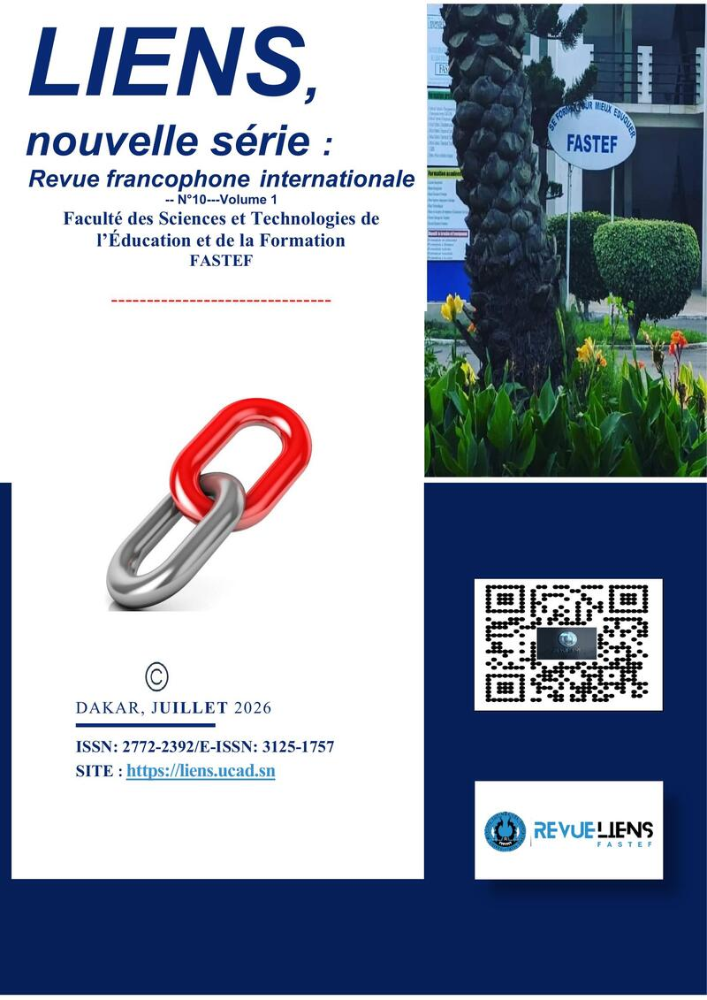

LIENS, nouvelle série, revue francophone internationale publiée par la Faculté des Sciences et Technologies de l'Éducation et de la Formation (FASTEF/UCAD), vient de publier dans son n°10 de juillet 2026 un article de Mouhamadou Bamba MBAYE consacré au modèle de la Stivation. L'article, intitulé « Le modèle de la Stivation : un modèle conceptuel d'apprentissage informel par interactions adidactiques en formation professionnalisante d'adultes », paraît aux pages 124 à 137, dans l'axe Sciences de l'éducation.
Ce texte pose les fondements théoriques d'un modèle élaboré dès 2010 et dont l'application de terrain, le CREAQ, fait l'objet d'une publication distincte dans la Revue Africaine des Sciences de l'Éducation et de la Formation. Les deux parutions se lisent en miroir : celle-ci construit la théorie, l'autre en donne les preuves de terrain.

LIENS, nouvelle série : revue francophone internationale
Éditeur : FASTEF, Université Cheikh Anta Diop de Dakar
Numéro : n°10, juillet 2026, volume 1
Pages : 124 à 137
ISSN : 2772-2392 · E-ISSN : 3125-1757
DOI : 10.61585/pud-liens
En une phrase
La Stivation, néologisme formé de STImulation, motiVATION et interACTION, désigne le processus par lequel des interactions entre pairs, hors de tout cadre formel, déstabilisent les certitudes des apprenants adultes tout en renforçant leur motivation, un mécanisme dont le CREAQ est devenu la traduction institutionnelle.
Cadre théorique
Le modèle s'enracine dans le socioconstructivisme de Piaget et de Vygotski, dans le conflit sociocognitif décrit par Doise, Mugny et Perret-Clermont, et dans les communautés de pratique de Wenger. Sa contribution propre consiste à étendre aux espaces entièrement hors-classe la notion de situation adidactique forgée par Brousseau pour la classe elle-même. L'article identifie quatre inhibiteurs de l'apprentissage formel neutralisés par ce cadre informel : la peur de l'évaluation, l'angoisse de performance, le stress de la relation asymétrique avec un formateur, et le trac des prises de parole publiques.
Des échanges spontanés entre pairs, hors des lieux et des temps officiels de formation, portés par une logique d'utilité immédiate plutôt que par une intention pédagogique.
La confrontation à une compréhension différente déstabilise les certitudes de l'apprenant, sans l'enjeu évaluatif qui rendrait cette déstabilisation anxiogène.
Le sentiment de compétence partagée et l'entraide mutuelle nourrissent une motivation intrinsèque, plus persévérante qu'une incitation extérieure.
Du concept au dispositif
Comment transformer un concept théorique en dispositif sans en trahir la logique interne ? L'article répond par le CREAQ, Cadre de Réflexion et d'Encadrement pour un Enseignement Apprentissage de Qualité : un groupe restreint d'enseignants reconnus par leurs pairs, qui encadrent leurs collègues selon un cycle mensuel d'encadrements individuels et de supervisions de cellules pédagogiques. Le dispositif institutionnalise la Stivation sans neutraliser sa puissance propre, en créant délibérément les conditions sociales qui permettent aux interactions adidactiques de se produire régulièrement.
La Triade Dynamique Intersubjective
L'expérimentation du CREAQ a conduit à formaliser un concept complémentaire : la Triade Dynamique Intersubjective. Elle met en interaction trois pôles, l'inspecteur, les enseignants pairs-formateurs du CREAQ et les enseignants en exercice (les « Maîtres Craie en Main »), dans une dynamique d'influences réciproques qui répond à une contrainte structurelle du système éducatif sénégalais : la norme d'un inspecteur pour cinquante enseignants, largement dépassée dans les faits.
L'expérimentation a couvert trois circonscriptions sur onze ans, dans des contextes volontairement contrastés pour éprouver la robustesse du modèle.
| Site | Période | Contexte | Enseignants encadrés | Taux de réussite CREAQ |
|---|---|---|---|---|
| Tivaouane | 2015-2019 | Semi-urbain | 585 | 97,8 % |
| Saraya | 2021-2024 | Ruralité profonde | 198 | Non précisé |
| Kédougou | 2024-2026 | Axe prioritaire du plan de pilotage | 289 | 98,45 % |
Regard critique
L'auteur pose lui-même les limites de son travail. L'absence de groupe de contrôle ne permet pas d'isoler rigoureusement l'effet du CREAQ des autres facteurs contextuels. Les conditions qui empêchent la Stivation de se produire, à la différence de celles qui la favorisent, restent à spécifier plus systématiquement. Et la généralisation du modèle à d'autres contextes de formation professionnelle adulte, au-delà de l'inspection de l'éducation, demeure une piste de recherche ouverte plutôt qu'un résultat acquis.
Pour aller plus loin
MBAYE, M. B. (2026). Le modèle de la Stivation : un modèle conceptuel d'apprentissage informel par interactions adidactiques en formation professionnalisante d'adultes. LIENS, nouvelle série, revue francophone internationale, FASTEF/UCAD, n°10, volume 1, p. 124-137.
VYGOTSKI, L. S. (1978). Mind in Society: The Development of Higher Psychological Processes. Harvard University Press.
BROUSSEAU, G. (1998). Théorie des situations didactiques. La Pensée Sauvage.
WENGER, E. (1998). Communities of Practice: Learning, Meaning, and Identity. Cambridge University Press.
Dans le prolongement
L'argumentaire complet, la cascade de la Stivation et l'architecture des acteurs du CREAQ sont réunis dans la section Stivation du site.
Partager cette publication